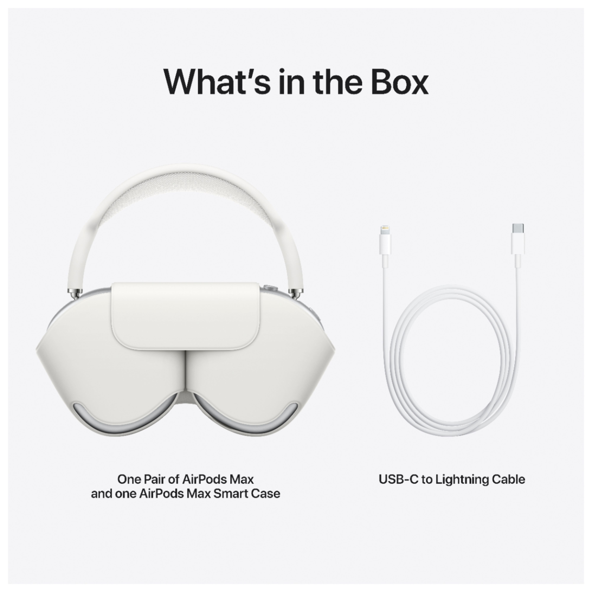
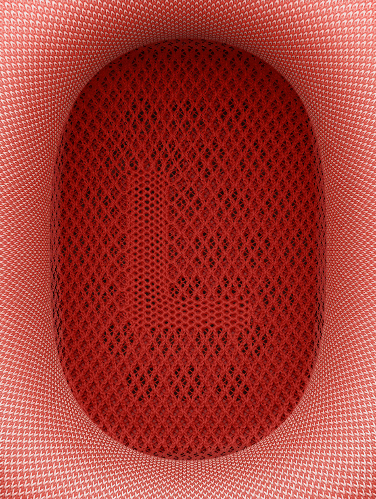
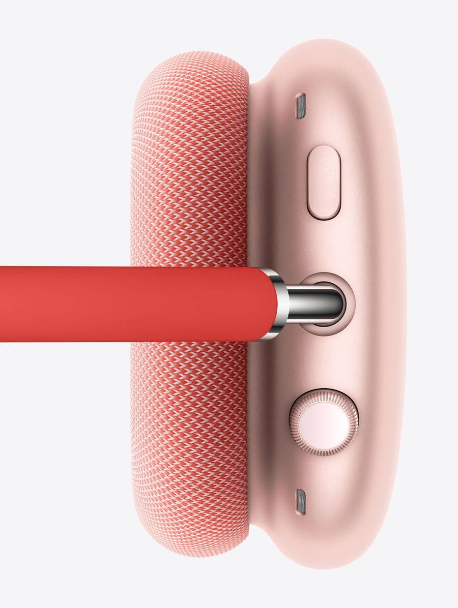

Introducing AirPods Max — a perfect balance of exhilarating high-fidelity audio and the effortless magic of AirPods. The ultimate personal listening experience is here.



A custom-designed mesh textile wraps the ear cushions to provide pillow-
like softness while listening.Crafted with acoustically engineered memory foam, the
ear cushions gently create an immersive seal that is the foundation of incredible sound.